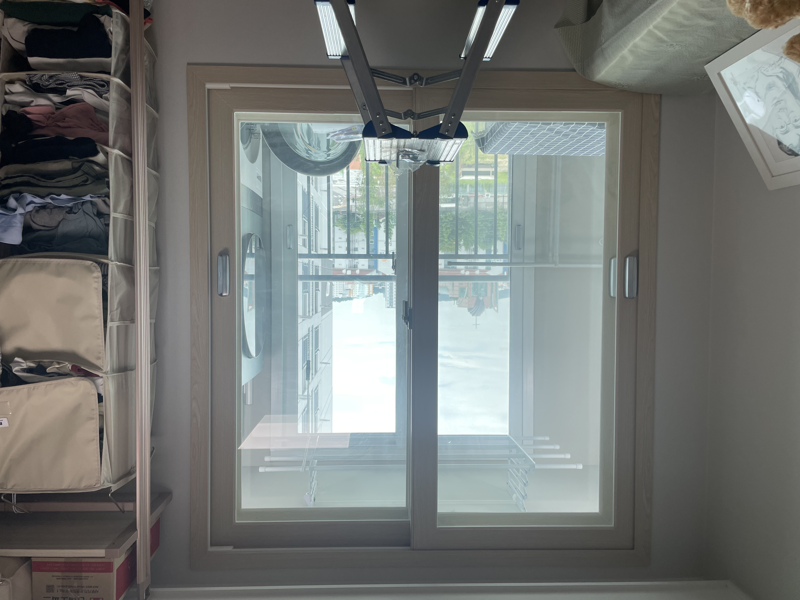
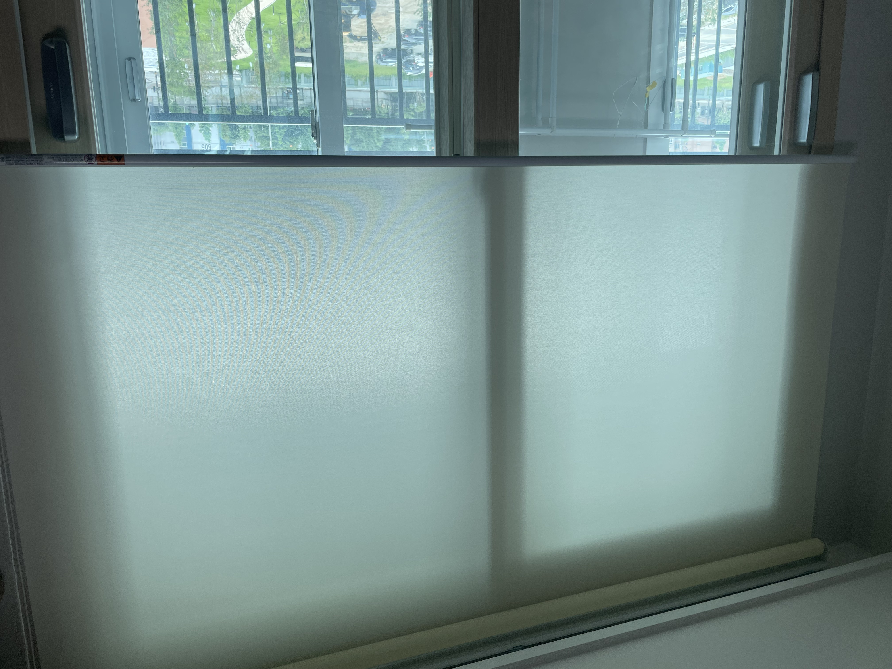
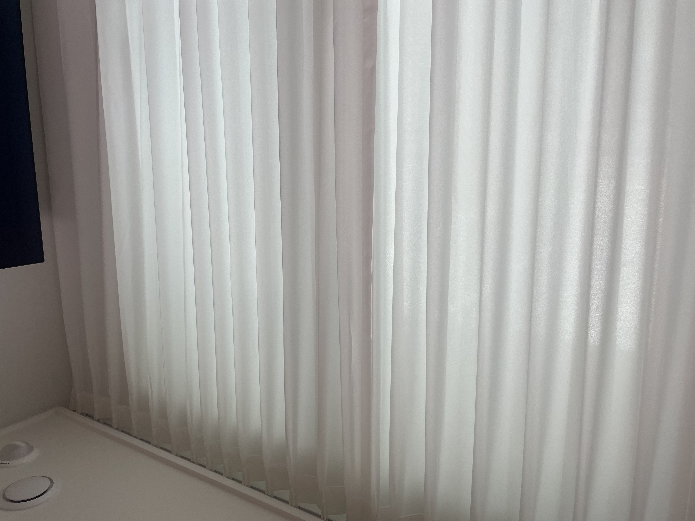
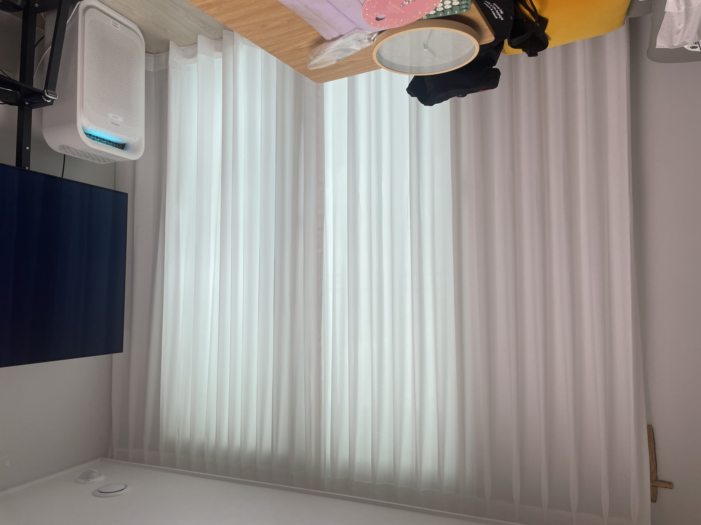

안녕하세요, 수도권 커튼·블라인드 전문 드리움 커튼&블라인드입니다. 이번 현장은 부천 원종동 휴튼아파트로, 거실에는 쉬폰 커튼, 방에는 롤스크린 블라인드를 시공한 작업이었습니다. 공간의 성격에 맞게 제품을 나눠, 거실은 밝고 화사하게, 방은 깔끔하고 실용적으로 완성했습니다.
이번 시공 요약
- 위치 · 부천 원종동 휴튼4단지아파트
- 공간 · 거실 + 방
- 제품 · 거실 쉬폰커튼 / 방 롤스크린
- 포인트 · 두께감 있는 쉬폰으로 사생활 보호
방 — 롤스크린 블라인드

먼저 방입니다. 방은 군더더기 없이 깔끔한 라인을 원하셔서 일반 롤스크린으로 진행했습니다. 창을 넉넉히 덮어 채광을 부드럽게 걸러주면서도, 필요할 땐 위로 걷어 시야를 확보할 수 있어 사용이 간편합니다.

거실 — 쉬폰 커튼 (두께감 있는 원단으로 사생활 보호까지)

거실은 채광을 살리면서도 은은하게 공간을 감싸주는 쉬폰 커튼으로 진행했습니다. 쉬폰은 특유의 하늘하늘한 느낌과 밝은 분위기가 매력이지만, 너무 얇으면 밤에 실내가 비쳐 사생활 보호가 아쉬울 수 있는데요.
그래서 이번엔 고객님 요청에 맞춰 쉬폰 원단 중에서도 가장 두께감이 있는 원단으로 진행했습니다. 덕분에 낮에는 빛을 화사하게 들이면서도, 어느 정도 시선을 가려 사생활을 보호하는 두 가지 장점을 모두 살렸습니다.

거실 발코니 확장 구조에도 창 라인에 맞춰 커튼이 깔끔하게 떨어지도록 시공했습니다. 주름이 일정하게 잡혀 커튼을 열고 닫을 때도 자연스럽게 떨어지고, 밝은 화이트 톤이라 거실 전체가 한결 넓고 화사해 보입니다.
드리움은 부천 원종·중동·상동을 비롯한 수도권 서남부와 서울·경기·인천 전 지역에서 정밀 실측부터 시공까지 직접 진행합니다. 커튼·블라인드 상담은 편하게 문의 주세요!